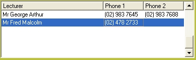

To display the lecturers attached to a course click on the Lecturers (F5) button .

Lecturer names, like all other names in Bookscan, are stored on one list - the mailing list.
So the first time the name is used, a Customer Record must be filled in.
Enquiries can later be done by any lecturer's name attached to a course.
Adding a lecturer
To add a lecturer to the course, click on the Add Lecturers (F9) button
This will open the customer master, where you can select a lecturer or create a new customer record.
Deleting a lecturer
Select the lecturer in the browser and click on the Delete Lecturer button.